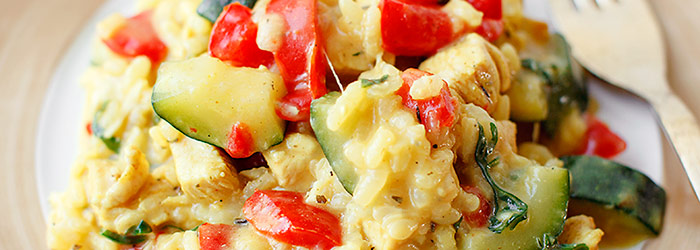

Risotto z kurczakiem i warzywami

Przykład podania
Zródło: Kwestia Smaku
Składniki
- 1 cebula
- 1 ząbek czosnku
- 1 pojedynczy filet z kurczaka
- 1/3 szklanki ryżu do risotto (arborio)
- 1/4 szklanki białego wina
- 1 czerwona papryka
- 200g cukinii
- przyprawy: po 1/3 łyżeczki kurkumy, oregano, tymianku, papryki ostrej lub słodkiej
- 500ml bulionu drobiowego
- 1/3 szklanki tartego parmezanu
- 50g gorgonzoli (opcjonalne)
- 1 łyżka posiekanej natki lub garść pokrojonej rukoli
- masło, oliwa extra vergine
Przygotowanie
- W garnku na 1 łyżce oliwy zeszklić pokrojoną w kosteczkę cebulę oraz starty na tarce czosnek. Przesunąć je na bok garnka, a w wolne miejsce włożyć 1 łyżkę masła oraz pokrojonego w kosteczkę kurczaka, doprawić go solą oraz pieprzem i obsmażać przez około 3 minuty co chwilę mieszając.
- Dodać ryż i dokładnie go obsmażyć. Wlać wino i gotować przez kilkanaście sekund aż odparuje. Następnie dodać pokrojoną w kosteczkę paprykę i cukinię i smażyć razem przez około minutę. W międzyczasie dodać wszystkie przyprawy.
- Wlewać po około pół szklanki gorącego bulionu i gotować bez przykrycia od czasu do czasu mieszając przez około 15 minut. Dodać kolejną porcję bulionu gdy poprzednia będzie wchłonięta przez ryż. Na koniec ryż ma być ugotowany al dente.
- Odstawić z ognia, dodać posiekaną natkę lub pokrojoną na kawałki rukolę, 2/3 ilości tartego parmezanu, 2 łyżki masła oraz pokrojoną na kawałki gorgonzolę jeśli jej używamy, wymieszać. Wyłożyć na talerze, posypać resztą sera.